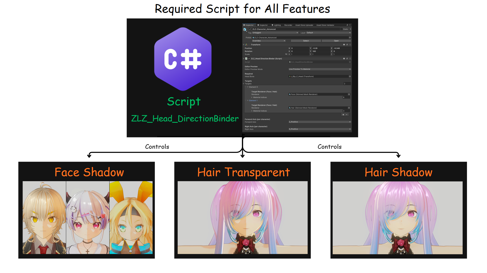
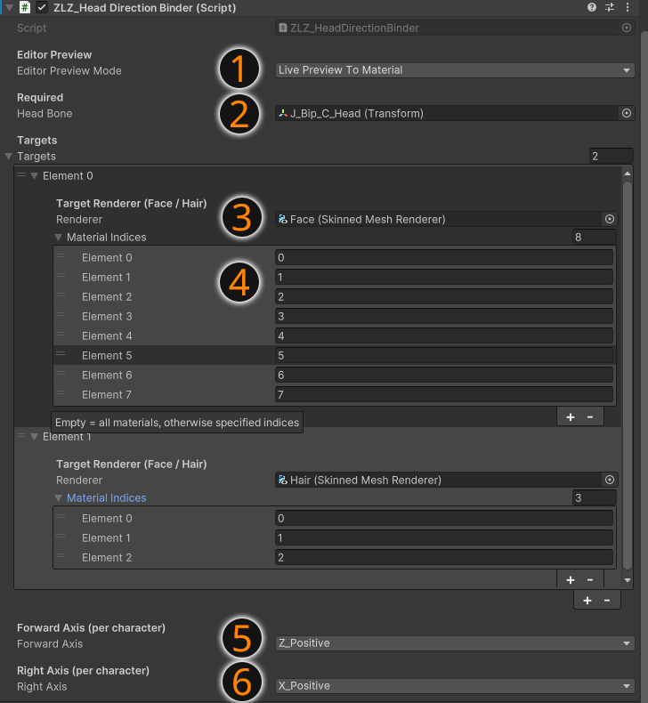

ZLZ_HeadDirectionBinder is the core script used to control the direction of the Head Bone and send that data to the shader, ensuring that related features work correctly.
This script is required for all of the following features:
The script reads the position and direction of the Head Bone (in World Space) and passes this data to the material, such as:
Features like Face Shadow and Hair Effects cannot rely on mesh data alone to determine correct directions, because each character may have different axis setups and rig configurations.
Using the Head Bone as a reference helps ensure that:
Features may not work correctly, such as:
ZLZ_HeadDirectionBinder is the core of the system. Without this script, features that rely on head direction will not function correctly.

Used to preview results in the Editor
On: Displays results instantly in the Editor (recommended during setup) Off: The script runs only at Runtime to reduce material changes in Version Control
💡 Recommended: Turn this off after setup is complete
Assign the character’s Head Bone
The Head Bone is used as the main reference for direction calculations, ensuring features like Face Shadow and Hair Effects work correctly
Assign the Mesh Renderer that will receive data from the script
💡 Recommended:
The script will send data to the materials used by this renderer
Specify which Material Indices the script should send data to
You can find the indices in the Renderer (material order in the mesh)
💡 Recommended:
Define the axis of the Head Bone that points forward from the face
Examples:
⚠️ Must be set correctly, otherwise Face Shadow may appear inverted
Define the axis of the Head Bone that points to the character’s right side
Examples:
⚠️ Used together with Forward Axis to ensure correct direction calculations
This script is a critical part of the system and is required for the following features:
If configured incorrectly, these features may not work as expected